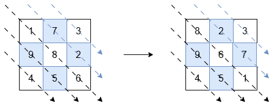
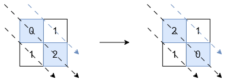

| Category | Difficulty | Likes | Dislikes |
|---|---|---|---|
| Algorithms | Medium | 498 | 100 |
amazon | google
You are given an n x n square matrix of integers grid. Return the matrix such that:
Example 1:
Input: grid = [[1,7,3],[9,8,2],[4,5,6]]
Output: [[8,2,3],[9,6,7],[4,5,1]]
Explanation:

The diagonals with a black arrow (bottom-left triangle) should be sorted in non-increasing order:
[1, 8, 6] becomes [8, 6, 1].[9, 5] and [4] remain unchanged.The diagonals with a blue arrow (top-right triangle) should be sorted in non-decreasing order:
[7, 2] becomes [2, 7].[3] remains unchanged.Example 2:
Input: grid = [[0,1],[1,2]]
Output: [[2,1],[1,0]]
Explanation:

The diagonals with a black arrow must be non-increasing, so [0, 2] is changed to [2, 0]. The other diagonals are already in the correct order.
Example 3:
Input: grid = [[1]]
Output: [[1]]
Explanation:
Diagonals with exactly one element are already in order, so no changes are needed.
Constraints:
grid.length == grid[i].length == n1 <= n <= 10-105 <= grid[i][j] <= 105